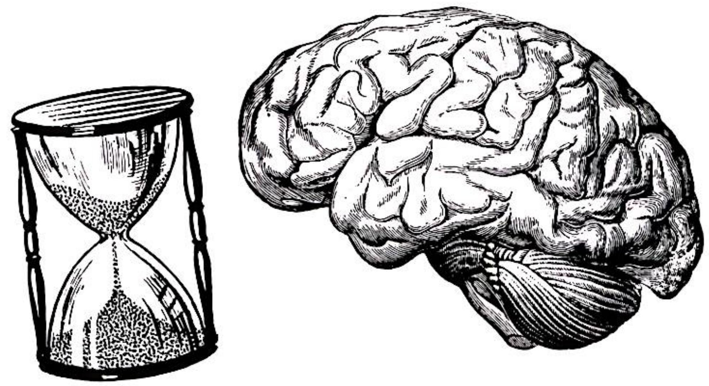
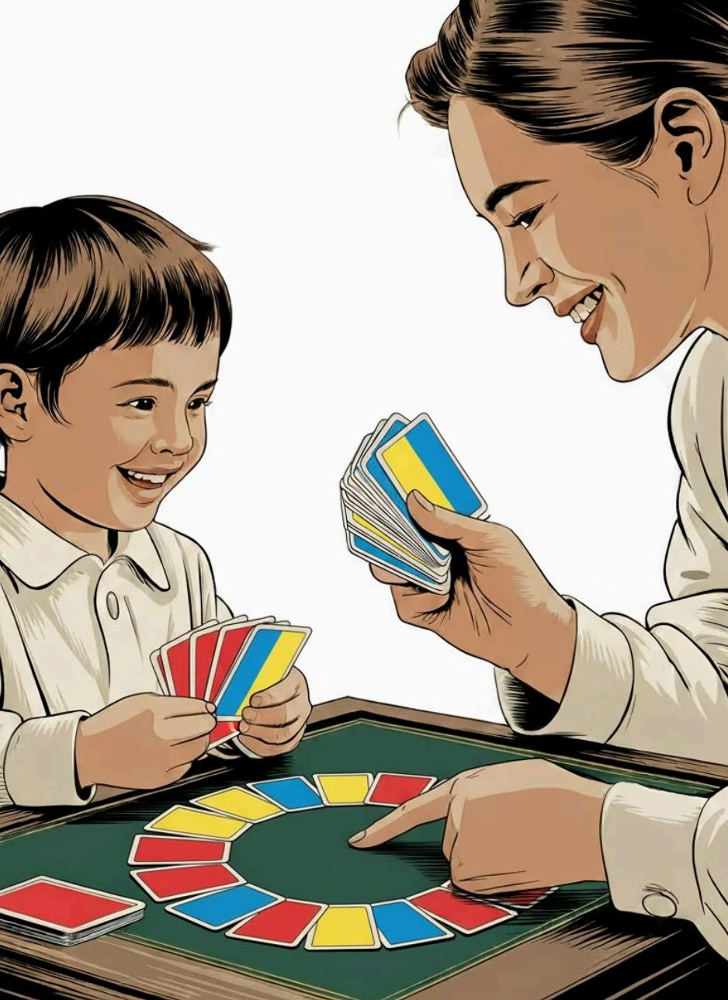
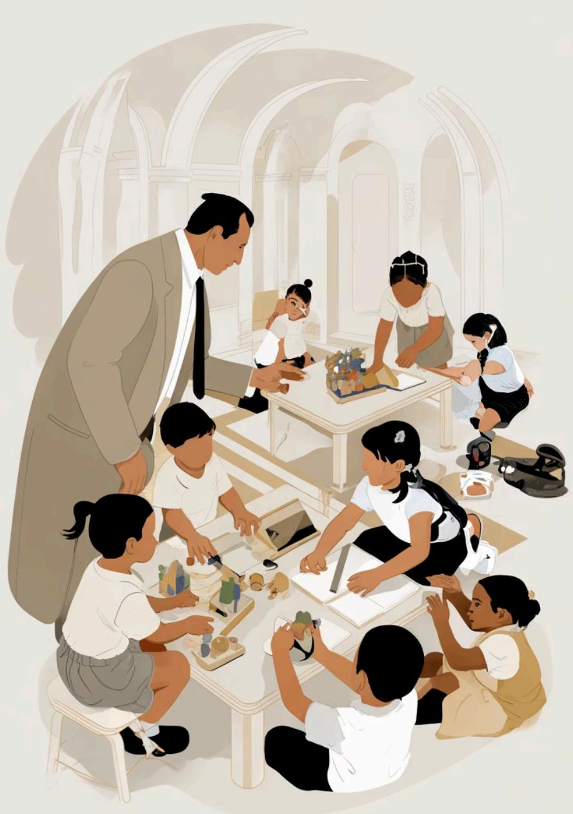

Um raio-X das ações extensionistas: diversidade, alcance e impacto no semestre 2025-2
42 PROJETOS. 3 EIXOS. 7 CIDADES.
UMA PSICOLOGIA QUE TAMBÉM ACONTECE FORA DA SALA DE AULA.
Números do semestre
Processos Psicológicos Básicos
Prof. Dr. Juhan Augusto Scardelato · Agosto–Novembro 2025
Os estudantes conduziram pesquisas científicas sobre memória, percepção e cognição — e traduziram esses resultados para a linguagem das redes sociais. Posts, carrosséis, vídeos e panfletos digitais levaram Psicologia para o Instagram de milhares de pessoas.
Subtemas abordados

Psicologia do Desenvolvimento
Prof. Dr. Murilo Machado · Agosto–Novembro 2025
Através do Jogo das Cores Proibidas — ferramenta baseada na teoria de Vygotsky — os estudantes foram a parques, residências e escolas para brincar com crianças e observar como o jogo e as regras constroem o desenvolvimento cognitivo.
Subtemas abordados

Psicologia Escolar
Prof. Ms. Oliver Zancul Prado · Agosto–Novembro 2025
Pesquisa-ação em escolas reais: diagnóstico institucional, intervenções com professores, gestores e alunos — e avaliação de impacto. Os estudantes entregaram cartilhas, baralhos educativos, histórias em quadrinhos e banners.
Subtemas abordados
Municípios atendidos
Araraquara · Tabatinga · Monte Alto · Ibitinga · São Carlos · Santa Ernestina · Américo Brasiliense

Panorama geral
42 projetos diferentes, um denominador comum: Psicologia que transforma
Modalidade
Locais de atuação
Alcance geográfico — 7 cidades
Alcance por eixo
Públicos atendidos
Ciclo escolar coberto
Impacto direto presencial
+609
pessoas impactadas diretamente
Depoimentos
O que disseram quem viveu de perto
"É feio deixar o amiguinho sozinho."
Criança · Educação Infantil · G6/PS67P52
"Essa palestra nos fez enxergar que o acolhimento é parte do ensino. Precisamos cuidar do professor para cuidar dos alunos."
Coordenadora escolar · G8/PS67P52
"Agora com as cartinhas é mais fácil lembrar!"
Participante · G6/PS34A52
"Foi bastante interessante distribuir a cartilha para a comunidade e sermos parte da divulgação deste assunto."
Estudante de Psicologia · G5/PS34A52
Análise
Três perspectivas sobre o semestre de extensão
Os 42 projetos cobrem da Educação Infantil (4 anos) ao pré-vestibular, passando por todas as etapas do ensino fundamental e médio. Essa amplitude reflete a vocação abrangente da Psicologia Escolar e a versatilidade na formação dos estudantes.
Em comum: todos partem de uma pergunta real, investigam um contexto concreto e propõem uma resposta prática. A diferença está no método — digital no PS12, lúdico-presencial no PS34, pesquisa-ação nas escolas no PS67.
171 estudantes experimentaram o que significa levar o conhecimento para além da sala de aula: produzir pesquisa, comunicar com o público leigo, entrar em uma escola real, sentar no chão com uma criança, conversar com um professor exausto.